C 标准库原理：在系统调用之上搭起第一层应用世界
课程：2026 春季学期《操作系统原理》
讲师：蒋炎岩（jyy）
官方课程主页：https://jyywiki.cn/OS/2026/
官方讲义：https://jyywiki.cn/OS/2026/lect9.md
视频来源：Bilibili BV1GHXCBkEZf
版权说明：课程讲义与幻灯片归蒋炎岩所有，采用 Creative Commons BY-NC 4.0 许可；本电子书是对课堂讲授的书面化重构，保留出处与许可说明。
导语：从只有系统调用的世界出发
(参考时间: 00:00)
前面的课程已经建立了一个足够小的程序世界：程序拥有寄存器和内存，可以执行指令；除此之外，几乎所有与外部世界的交互，都要经过系统调用。
这条路线可以概括为：
- 进程管理 API：
fork、execve、exit； - 内存管理 API：
mmap、munmap、mprotect； - 对象访问 API：
open、read、write、lseek； - UNIX 暴露出来的对象：文件、管道、
/proc、终端和其他资源。
从理论上说，只掌握这些接口，就足以写出应用软件。可是从工程实践看，如果每次都直接拿系统调用来拼装程序，开发体验会非常糟糕。例如打印一个字符串，可能要反复调用 write；处理文件本地缓冲、错误信息、格式化和进程退出，也要在每个程序里重复实现。
应用生态需要复用，而第一个大规模复用层就是 C 语言标准库（libc）。
flowchart BT
A["寄存器与内存"] --> B["机器指令"]
B --> C["系统调用接口"]
C --> D["libc：第一层应用抽象"]
D --> E["C++ / Python / JavaScript / ..."]
E --> F["数据库、浏览器、AI 与完整应用生态"]
这一讲的目标不是罗列所有 libc 函数，而是沿着 musl libc 的实现，观察标准化接口如何从机器、ABI、系统调用和进程运行环境中生长出来。
1. C 的完全体：计算模型与 FFI
1.1 SimpleC 只描述了计算
(参考时间: 00:09)
课程前面定义过一种简化的 C 模型。任意 C 程序都可以被整理成较为规则的形式：
- 赋值、条件、循环和函数调用；
- 指针、数组和结构体是内存与地址的直接操作；
- 控制流最终可以转换为跳转、寄存器腾挪和 load/store。
因此，SimpleC 可以较直接地翻译成 x86-64、AArch64 或 RISC-V 汇编。它很好地描述了“计算”，却没有完整描述 C 与世界交互的能力。
1.2 Foreign Function Interface
C 的完全体还需要 Foreign Function Interface，FFI：跨越语言和二进制边界调用其他代码的能力。
在 C 中有两条典型路径：
- 直接链接由汇编或其他语言实现的函数；
- 在 C 源码中嵌入内联汇编。
Python 也有同样的现实。Python 的 mmap 模块最终要落到系统调用；CPython 本身由 C 实现，因此 Python 与 C 之间可以相互调用。语言之间的 FFI 让高层应用能够复用底层实现。
flowchart LR
A["C 源码"] --> B["声明外部函数"]
B --> C["链接器解析符号"]
C --> D["汇编 / 其他语言实现"]
D --> E["ABI 约定寄存器、栈与返回值"]
E --> F["函数调用成功"]
1.3 ABI 是跨语言调用的合同
在 x86-64 System V ABI 中，前几个整数参数通常放在 rdi、rsi、rdx、rcx、r8、r9，返回值放在 rax。栈上还会有返回地址、保存的寄存器和超出寄存器数量的参数。
C 和汇编只要共同遵守 ABI，就能互相调用。
/* 汇编实现只要符合 ABI，C 侧就可以像普通函数一样声明。 */
extern int add(int x, int y);
; x86-64 System V 示例
add:
mov eax, edi
add eax, esi
ret
系统调用本身也是通过这条路径进入的。fork、pipe 等 C 函数最终可能落到一小段执行特定系统调用指令的汇编代码上。
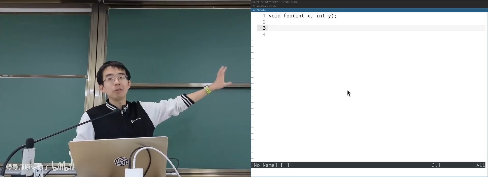
📷 ABI 与汇编函数调用约定
回到原视频 (00:12:05)
1.4 内联汇编：必要但危险
(参考时间: 00:13)
内联汇编可以直接在 C 中写目标平台指令。一个最小示例是在 _start 中直接执行 Linux x86-64 的 exit 系统调用：
void _start(void) {
__asm__(
"mov $60, %eax\n" /* syscall: exit */
"xor %edi, %edi\n" /* status: 0 */
"syscall"
);
}
这段代码在 x86-64 Linux 上可以工作，但原样拿到 AArch64 上会失败，因为嵌入的字符串会原封不动交给汇编器，而不同指令集并不认识这条指令。
GCC 扩展内联汇编的语法大致由五部分组成：
Instructions : Outputs : Inputs : Clobbers : GotoLabels
它之所以复杂，是因为最初希望：
- 保持 C 语法解析器兼容，把汇编放在字符串里；
- 允许汇编引用 C 作用域里的变量；
- 允许把汇编结果写回 C 变量；
- 允许指定输出、输入、可读写的操作数和被破坏的寄存器；
- 与编译器的寄存器分配及优化协同。
例如：
int a = 7, b = 5, result;
__asm__(
"leal (%1,%1,4), %0" /* result = a * 5 */
: "=r" (result) /* output operand */
: "r" (a) /* input operand */
);
printf("%d * %d = %d\n", a, b, result);
问题在于，编译器只负责外围约束，不会真正理解字符串内部汇编的语义。如果一段内联汇编破坏了寄存器却没有写入 clobber 列表，程序可能今天看起来完全正常，等编译器升级、优化策略改变后突然出错。
讲师提到，2019 年曾试图研究内联汇编误用问题，结果相关工作被别人先发表。到了 AI 时代，这种需要大量细节记忆的工作，已经越来越适合交给模型处理；但理解 FFI 与 ABI 的概念仍然重要。
flowchart TD
A["C 作用域变量"] --> B["输出 / 输入 / 读写约束"]
B --> C["字符串形式的汇编模板"]
C --> D["预处理替换操作数"]
D --> E["汇编器解析指令"]
E --> F["目标机器执行"]
B --> G["Clobber 列表"]
G --> H["编译器避开被破坏寄存器"]
H --> F
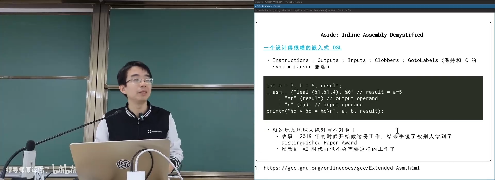
📷 内联汇编的输入、输出与寄存器约束
回到原视频 (00:15:10)
1.5 层层累积的应用生态
(参考时间: 00:23)
SimpleC 提供计算，FFI 提供跨越边界的调用能力；两者相加，已经足以实现操作系统和应用生态中的任何东西。
计算机软件的历史也是一层层累积抽象的历史：
- 1950 年代：主要直接使用汇编和打孔纸；
- 1960 年代以后：C、Pascal 与结构化程序设计逐渐普及；
- 1970 年代：在 UNIX 上用 C 写程序，成为可移植应用的重要起点；
- 2010 年代：C 仍很强，但大量应用转向 Python、Java、JavaScript；
- 2026 年：自然语言成为新的编程入口，但底座仍然是机器、系统调用与 C/UNIX 构建出的抽象层。
这像一颗洋葱，或者一座不断加高的建筑：
flowchart BT
A["机器指令"] --> B["C / SimpleC 计算模型"]
B --> C["libc"]
C --> D["POSIX"]
D --> E["C++ / Java / Python / JavaScript"]
E --> F["浏览器、云服务、AI 应用"]
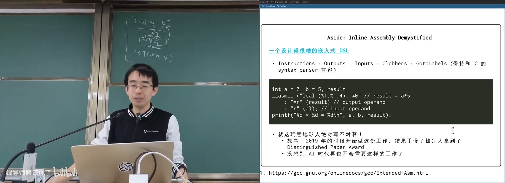
📷 从汇编到应用生态的多层抽象
回到原视频 (00:23:00)
2. 标准化的力量
2.1 ISO C：稳定而广泛的可移植层
(参考时间: 00:25)
C 语言遵循 ISO C 标准。标准本身不是为了限制实现者，而是让大家能够在一个稳定、共同的语义体系中交流。
它的价值体现在：
- 不必在升级实现时频繁担心语义破坏；
- 同一份符合标准的代码可以跨处理器、操作系统和设备；
- 只使用标准中最小的可移植部分时，程序可以运行在服务器、超级计算机、手表、手环乃至只有很小内存的设备上。
当然，可移植性需要开发者配合。例如不能默认 int 永远是 4 字节：
/* 不可移植：假设 int 的宽度固定。 */
unsigned int x = 0xffffffffu;
/* 更明确：使用具有固定宽度的类型。 */
#include <stdint.h>
uint32_t y = UINT32_C(0xffffffff);
2.2 POSIX：让 UNIX 风格接口可复用
ISO C 之上还有 POSIX。unistd.h 中的 fork、pipe、execve 等接口及其行为，由 POSIX 标准规定。
几乎所有具备一定复杂性的通用操作系统，都至少需要：
- 一个 C 编译器，能够编译别人写出的程序；
- 一定程度的 POSIX 兼容层，让常见命令行工具和应用程序可以迁移运行。
Android、OpenHarmony 等系统分别使用 Toybox、BusyBox 一类工具集，它们在 C 与 POSIX 接口上实现了许多核心命令。C 的声音因此遍布各种设备，即使最终用户不再直接用 C 编程。
flowchart TD
A["ISO C"] --> B["语言语法与标准库的最小公共语义"]
B --> C["POSIX"]
C --> D["UNIX 风格系统调用与用户空间接口"]
D --> E["可移动的应用程序和命令行工具"]
E --> F["Linux / macOS / Android / OpenHarmony / 嵌入式系统"]
2.3 为什么选择 musl libc
(参考时间: 00:29)
系统通常自带 glibc。也可以下载调试符号，直接单步调试 glibc 的每一行。但 glibc 有沉重的历史包袱和大量针对不同平台、指令集的优化，这些优化对初学者理解“原理”反而是噪音。
讲师让 AI 推荐更适合学习的 libc，结果是 musl。musl 代码相对现代、整洁，并基于 Linux API 实现；把 musl 编译成带调试信息的静态版本后，可以非常清楚地观察：
- 头文件中的类型和宏；
- 字符串、内存和随机数函数；
stdio对文件描述符的封装；printf的解析核心；setjmp、longjmp；errno与perror；- 环境变量初始化；
- C Runtime 的入口和退出。
讲师用 AI 和编译器生成了一份可用于调试的 musl-gcc，再把最小程序编译成静态可执行文件，以便从第一条指令开始追踪 libc。
# 示意：用带调试信息的 musl 工具链编译静态程序
musl-gcc -g3 -O1 -static demo.c -o demo
# 查看头文件展开后的结果
musl-gcc -E inttypes_demo.c
# 使用调试器观察 libc 内部
gdb ./demo
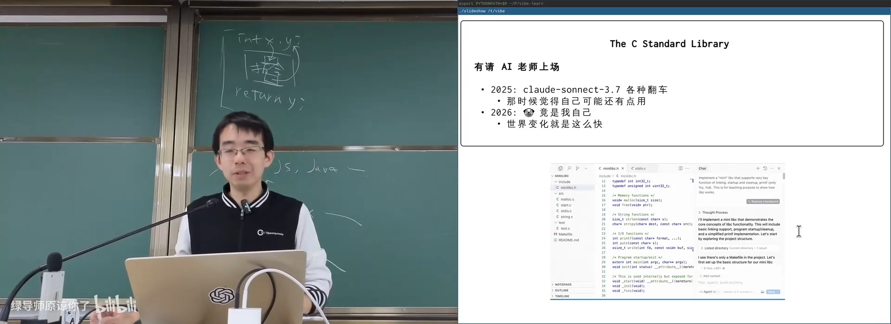
📷 通过 AI 构建可调试的 musl libc 环境
回到原视频 (00:29:50)
2.4 从第一条指令开始调试
这份 musl 环境让课堂能够把“一个最简单的 C 程序”拆到指令、寄存器和系统调用的粒度。main 并不是程序真正执行的第一条指令，printf 也不是魔法，环境变量不是凭空出现的。
整条路线可以简化为：
flowchart LR
A["ELF entry"] --> B["_start"]
B --> C["__libc_start_main"]
C --> D["__init_libc"]
D --> E["main(argc, argv, envp)"]
E --> F["exit"]
F --> G["执行 atexit handlers"]
G --> H["flush stdio buffers"]
H --> I["exit system call"]
3. Freestanding 环境：不依赖操作系统的 C
(参考时间: 00:36:55)
C 程序通常有两种执行环境：
- Hosted：有完整标准库，也可以使用操作系统服务；
- Freestanding：不默认依赖宿主操作系统，只提供语言核心和少量头文件。
在 freestanding 环境中，不能假设 putchar、exit、fopen 或文件描述符存在。操作系统内核、裸机固件和引导程序通常需要这种模型。C 仍然可以借助内联汇编访问硬件，但不会把普通 C 程序直接变成“无需操作系统的程序”。
3.1 机器与平台定义
Freestanding C 仍然提供许多与机器直接相关的常量、类型和宏：
stddef.h：size_t、ptrdiff_t、NULL、offsetof；float.h：浮点数范围、精度和表示特性；limits.h：整数和字符类型范围；stdint.h：固定宽度和最小宽度整数类型；inttypes.h：固定宽度整数的格式化宏。
例如，int 和 long 的宽度与机器字长相关：
- 32 位机器上，
long通常是 4 字节； - 64 位机器上，
long通常是 8 字节； int32_t、uint64_t则提供明确的固定宽度语义。
如果直接使用 printf，很容易写出错误的格式：
long value = 42;
printf("%d\n", value); /* 错误：long 不一定是 int */
printf("%ld\n", value); /* 正确，但 long 的宽度仍随平台变化 */
固定宽度整数需要 inttypes.h 提供的格式宏：
#include <inttypes.h>
#include <stdint.h>
#include <stdio.h>
int64_t i = INT64_C(-123456789);
uint64_t u = UINT64_C(123456789);
uintptr_t p = (uintptr_t)&i;
printf("i = %" PRId64 "\n", i);
printf("u = %" PRIu64 "\n", u);
printf("p = 0x%" PRIxPTR "\n", p);
在预处理后，PRId64 一类宏会展开为平台对应的实际格式串片段。C 的字符串字面量相邻拼接规则让这种间接构造可以正常工作：
"value = %" PRId64 "\n"
这说明语言机制、预处理、标准库设计是环环相扣的。
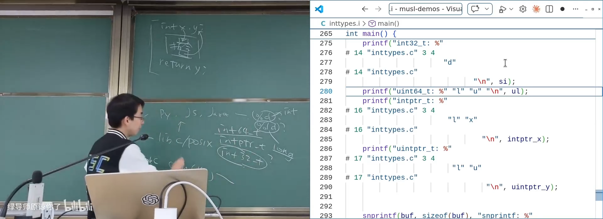
📷 固定宽度整数与 PRId / PRIu 格式宏
回到原视频 (00:41:15)
3.2 offsetof：把地址当计算
offsetof(T, member) 可以给出结构体成员相对对象头部的偏移。一个典型实现思路是：
#define offsetof(TYPE, MEMBER) \
((size_t)&(((TYPE *)0)->MEMBER))
这里并不是真的要解引用空指针，而是构造一个“地址为 0 的对象”的成员地址，再把地址转换为整数。编译器也可以使用内建能力实现它。
flowchart LR
Z["地址 0 虚构结构体对象"] --> A["成员 MEMBER"]
A --> B["取成员地址计算"]
B --> C["相对于对象头部的位置"]
C --> D["转换为 size_t"]
3.3 可变参数与 stdarg.h
(参考时间: 00:43:30)
printf("...", 1, 2, 3, ...) 可以接收数量不固定的参数。传统 32 位 x86 调用约定把参数主要放在栈上，可以把第一个参数后面的地址视为参数数组。但在 x86-64、AArch64 等现代体系结构上，大部分参数通过寄存器传递，这个简单做法不再成立。
编译器、ABI 与标准库必须协作：当函数包含可变参数时，为 va_list、va_start、va_arg 等宏准备足够的信息，让它们能够逐个读取参数。
#include <stdarg.h>
long sum(int count, ...) {
va_list ap;
long total = 0;
va_start(ap, count);
for (int i = 0; i < count; ++i) {
total += va_arg(ap, int);
}
va_end(ap);
return total;
}
真正复杂的地方不在循环，而在 ABI：寄存器参数、栈参数、浮点参数和对齐规则都可能不同。
flowchart TD
A["调用者构造可变实参"] --> B["ABI 决定寄存器与栈布局"]
B --> C["va_start 初始化遍历状态"]
C --> D["va_arg 读取下一个参数"]
D --> E["类型提升与对齐处理"]
E --> F{"还有参数吗？"}
F -- "是" --> D
F -- "否" --> G["va_end 清理"]
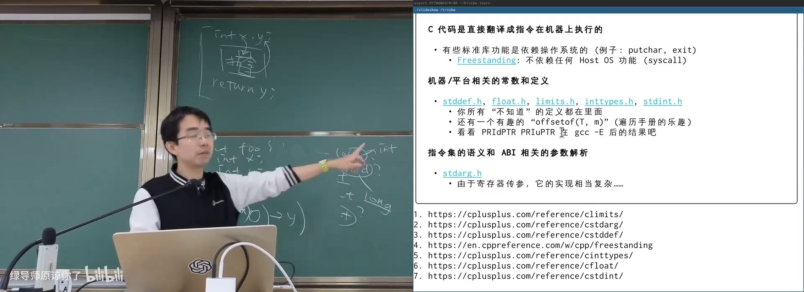
📷 在寄存器传参的 ABI 下实现 stdarg
回到原视频 (00:43:30)
4. 随手可以实现的函数，以及真正困难的部分
4.1 字符串、内存与随机数
(参考时间: 00:45)
string.h 中很多函数看起来像 C 初学者的课后练习：
void *memcpy(void *dest, const void *src, size_t n);
void *memmove(void *dest, const void *src, size_t n);
char *strcpy(char *dest, const char *src);
它们的接口容易理解，但要与不同机器上的向量指令、对齐规则和性能要求结合，实现并不简单。
stdlib.h 中的随机数函数也有一个常见误解：
#include <stdlib.h>
srand(1234);
int a = rand();
srand(1234);
int b = rand();
/* a == b：相同种子产生相同序列。 */
rand 不是不可预测的熵源，而是一个由种子决定的伪随机数生成器。它本质上是数学函数或确定性状态机。
4.2 qsort 为什么难用
(参考时间: 00:46)
通用排序函数的接口是：
void qsort(void *base, size_t nmemb, size_t size,
int (*compar)(const void *, const void *));
C 缺少模板、泛型和闭包这类机制，为了排序任意元素，只能：
- 用
void *抹掉类型； - 用字节大小计算元素地址；
- 要求调用者提供比较函数；
- 在必要时通过全局变量传递上下文。
如果在 C++ 或 Python 中，开发者通常会使用模板、比较器或结构体，接口可读性更好。qsort 是可以工作的，但它清楚地展示了 C 作为“高级汇编语言”时，抽象能力与可读性之间的取舍。
4.3 math.h 与 NaN
浮点数并不等同于数学实数。考虑下面这个值：
#include <math.h>
double a = NAN;
对它执行比较时会出现：
(a > a) == false
(a < a) == false
(a == a) == false
满足“不大于自己、不小于自己，也不等于自己”的数是 NaN，即 Not a Number。它来自 IEEE 754 的特殊值编码，也会出现在量化、浮点精度、特殊运算和异常传播中。
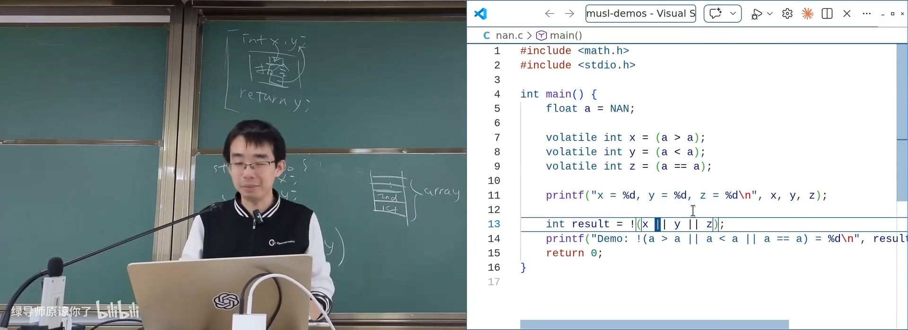
📷 NaN 的浮点比较行为
回到原视频 (00:48:00)
5. setjmp / longjmp：栈上的长跳转
(参考时间: 00:48:30)
5.1 回到 SimpleC 的栈
SimpleC 的执行模型可以概括为：
pc = stack[-1].PC
stack[-1].PC.next()
inst[pc].execute()
每次函数调用都会在栈上放入新的栈帧，每个栈帧带有当前执行位置。函数返回时，弹出栈顶帧。
setjmp 和 longjmp 对这个模型做了一次很有意思的改造：
setjmp(buf)把当前栈深度和返回位置记录到buf中；- 正常执行时，
setjmp返回0； - 之后可以继续调用任意层函数；
longjmp(buf, value)直接丢弃中间所有栈帧，回到setjmp记录的位置；longjmp传入的value会成为setjmp第二次返回的值；如果传入0，标准要求改为返回非零值。
#include <setjmp.h>
#include <stdio.h>
static jmp_buf checkpoint;
static void second(void) {
puts("inside second");
longjmp(checkpoint, 42);
}
static void first(void) {
puts("inside first");
second();
puts("unreachable after longjmp");
}
int main(void) {
int value = setjmp(checkpoint);
if (value == 0) {
puts("setjmp returns 0");
first();
} else {
printf("longjmp returns %d\n", value);
}
return 0;
}
flowchart TD
A["main: setjmp(buf)"] -->|"第一次返回 0"| B["first()"]
B --> C["second()"]
C --> D["longjmp(buf, 42)"]
D --> E["丢弃 first 与 second 的栈帧"]
E --> F["回到 main 中 setjmp 的位置"]
F -->|"第二次返回 42"| G["执行 else 分支"]
5.2 大型 goto 与资源清理
函数内部的 goto 只能在同一函数中跳转。setjmp / longjmp 则像一个大号的跨函数 goto。
它适合处理复杂资源清理：
int operation(void) {
int ret = -1;
Resource *a = acquire_a();
Resource *b = acquire_b();
if (!a || !b) {
goto cleanup;
}
if (do_work(a, b) != 0) {
goto cleanup;
}
ret = 0;
cleanup:
release_b(b);
release_a(a);
return ret;
}
longjmp 能把“跳到统一清理点”扩展到多层函数。它不需要额外的系统调用，主要由编译器生成正确的寄存器和控制流保存代码。
讲师用“拆帐篷”作比喻：在宿舍先记录一个位置，然后去教学楼、逸夫楼、食堂；做完一系列事情后执行 longjmp，不管中间经历了什么，历史栈全部清掉，直接回到当初标记的位置，同时带走一个返回值。
flowchart LR
A["标记：宿舍"] --> B["第一层：教学楼"]
B --> C["第二层：逸夫楼"]
C --> D["第三层：食堂"]
D --> E["longjmp：直接回宿舍"]
E --> F["携带返回值恢复现场"]
这项能力也会在实验和协程实现中发挥重要作用。
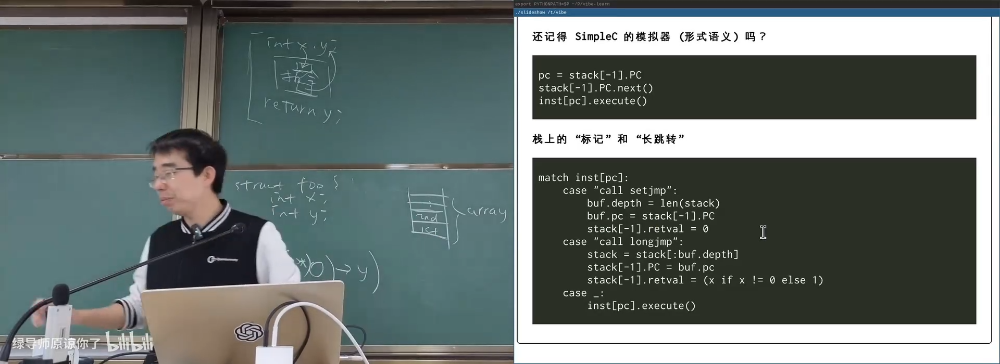
📷 通过 GDB 观察 setjmp 与 longjmp 的栈恢复
回到原视频 (00:48:30)
6. 系统调用封装：stdio 与文件描述符
(参考时间: 00:55:46)
6.1 FILE * 背后是文件描述符
C 标准 I/O 与 UNIX 文件接口存在明显的对应关系：
| C 标准 I/O | UNIX / 系统调用层 |
|---|---|
fopen |
open |
fread |
read |
fwrite |
write |
fseek、ftell |
lseek |
fclose |
close |
FILE * 并不是操作系统对象本身，而是 libc 在用户空间维护的一层结构。它内部至少包含：
- 文件描述符；
- 读写缓冲区；
- 当前缓冲指针与剩余字节数；
- 错误状态和 EOF 状态；
- 当前偏移与缓冲状态；
- 一组
read、write、seek、close函数指针。
typedef struct _IO_FILE FILE;
FILE *fp = fopen("data.bin", "rb");
char buffer[4096];
size_t n = fread(buffer, 1, sizeof(buffer), fp);
/* fread 可能在用户空间缓冲，底层再调用 read。 */
fclose(fp);
flowchart LR
A["C 程序"] --> B["FILE *"]
B --> C["fd：文件描述符"]
B --> D["buffer：用户空间缓冲区"]
B --> E["read / write / seek / close 函数指针"]
C --> F["open / read / write / lseek / close"]
F --> G["内核文件对象"]
musl 的 FILE 结构比 glibc 更适合阅读。它的函数指针设计类似面向对象：同一个 FILE 接口可以连接普通文件、字符串缓冲、管道等不同后端。例如 sprintf 可以向内存缓冲区“写文件”，只要实现相应的读写和定位操作。
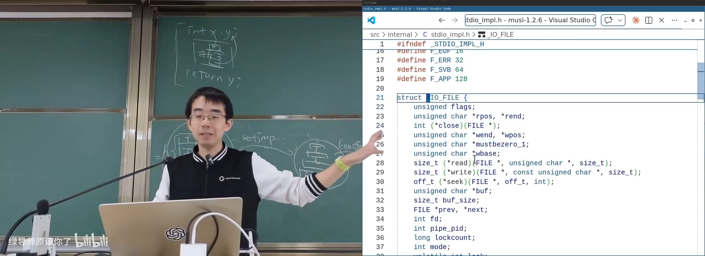
📷 musl 中 FILE 结构的文件描述符、缓冲区和函数指针
回到原视频 (00:58:00)
6.2 printf 家族共享一个解析核心
printf、fprintf、sprintf、snprintf 等功能看似很多，但不应复制多套格式化逻辑。它们通常统一落到一个可变参数的格式化函数：
int vfprintf(FILE *stream, const char *format, va_list ap);
总体流程是：
- 从左到右扫描格式字符串；
- 遇到普通字符就输出；
- 遇到
%d、%s、%x等转换说明，就解析宽度、精度和标志； - 从
va_list读取对应参数； - 把结果写入目标
FILE或内存缓冲； - 最终由
FILE的写入函数连接到底层文件描述符。
flowchart TD
A["printf(fmt, ...)"] --> B["vfprintf(stdout, fmt, ap)"]
C["fprintf(fp, fmt, ...)"] --> B
D["sprintf(buf, fmt, ...)"] --> E["内存流 FILE 后端"]
B --> F["扫描格式字符串"]
F --> G["解析转换说明"]
G --> H["从 va_list 取参数"]
H --> I["格式化输出"]
I --> E
I --> J["目标 FILE 的写函数"]
J --> K["write 系统调用或内存缓冲"]
这种设计减少了代码克隆，也让 printf 家族共享同一套解析、宽度和精度规则。
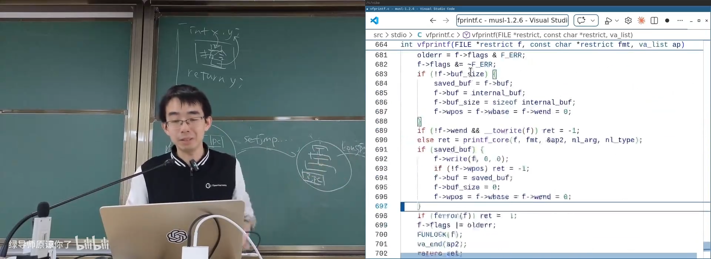
📷 vfprintf 的统一解析循环
回到原视频 (01:00:30)
7. 进程管理封装：退出与协作
(参考时间: 01:01)
7.1 正常退出、异常退出与 atexit
libc 提供几种进程管理能力：
abort()：给自己发送SIGABRT，通常会触发 core dump；exit()：正常退出，刷新 stdio 缓冲区并执行已注册的退出处理器；atexit()：注册正常退出时调用的函数；_exit()：直接执行退出系统调用，不运行用户态清理。
#include <stdio.h>
#include <stdlib.h>
static void remove_temporary_file(void) {
puts("cleanup: remove temporary file");
}
int main(void) {
atexit(remove_temporary_file);
puts("main body");
return 0;
}
atexit 适合清理临时文件和资源。在线评测系统会在进程结束后统一回收一切；真实系统则不能假设整个机器会替每个程序收拾现场。一个高频调用、反复创建大临时文件的工具，如果从不删除文件，最终可能耗尽 /tmp。
assert 失败时通常不是调用 exit，而是走 abort 路径，所以进程会表现为被 SIGABRT 终止。若系统配置允许，还会产生 core dump。名称中的 core 來自早期磁芯内存（core memory）：把进程内存状态转储到持久存储，以便事后调试。
flowchart TD
A{"程序如何结束？"} -->|"main 返回 / exit"| B["运行 atexit handlers"]
B --> C["flush stdio buffers"]
C --> D["调用 exit 系统调用"]
A -->|"abort / assert 失败"| E["发送 SIGABRT"]
E --> F["可能生成 core dump"]
A -->|"_exit"| G["直接调用 exit 系统调用"]
G --> H["不运行用户态 handler / flush"]
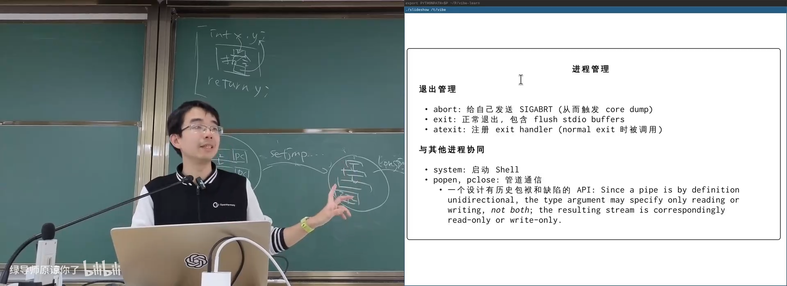
📷 atexit、stdio 刷新与正常退出流程
回到原视频 (01:01:20)
7.2 system：启动 Shell 执行命令
最方便但最重的进程协作接口是 system：
#include <stdlib.h>
int status = system("ls -l");
它的背后会启动一个 Shell，再由 Shell 解析和执行命令。这带来了额外开销，也意味着当前进程会等待子进程结束。
它很适合简单场景，例如清屏：
system("clear");
直接输出 ANSI escape sequence 通常更轻，但在只需要一个快速、可工作的解决方案时，system 往往足够。
7.3 popen 与单向管道
popen 启动命令并返回一个 FILE *，使调用者可以读取命令输出，或者向命令标准输入写入：
#include <stdio.h>
FILE *fp = popen("uname -a", "r");
char buffer[256];
while (fgets(buffer, sizeof(buffer), fp)) {
fputs(buffer, stdout);
}
pclose(fp);
但 popen 产生的管道是单向的。pipe 系统调用会返回两个文件描述符；FILE * 却只对应一个描述符，因此 API 无法同时提供“读写两端”而保持好看。
flowchart LR
A["父进程 FILE *"] -->|"单向管道"| B["子进程标准输入"]
B --> C["Shell 或外部程序"]
C --> D["标准输出 / 标准错误"]
D --> E["终端或其他目的地"]
F["Python subprocess"] --> G["stdin / stdout / stderr"]
G --> H["可以同时双向通信"]
popen 的历史包袱很明显，但对“执行一个命令并取得输出”这个常见需求而言，它比 system 更有控制力。
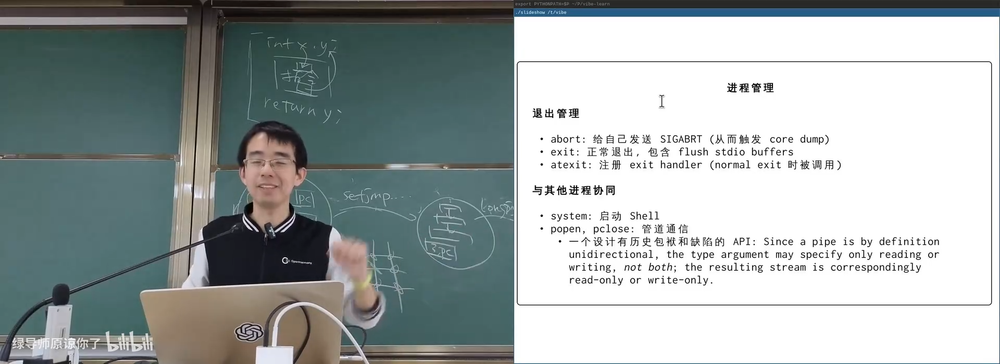
📷 system 与 popen 的进程和管道关系
回到原视频 (01:04:50)
8. 错误处理：errno 与 perror
(参考时间: 01:06)
8.1 系统调用必须面对失败
所有涉及外部资源的接口都可能失败。手册页通常提供 ERRORS 一节，列出每个错误码和含义。
fork 失败时可能返回：
EAGAIN：暂时没有资源，过一段时间可以重试；ENOMEM：内存不足。
open 的错误更多：
EACCES：权限不足；ENOENT：文件不存在；EEXIST：配合O_CREAT | O_EXCL时，文件已经存在；EINTR：调用被信号中断；- 更多与路径、文件系统和资源限制相关的错误。
在线评测程序常常假设输入一定合法、资源一定充足，因此很少真正处理错误。工具程序和系统软件不能这样假设。
#include <errno.h>
#include <fcntl.h>
#include <stdio.h>
#include <unistd.h>
int fd = open("missing.txt", O_RDONLY);
if (fd < 0) {
perror("open missing.txt");
return 1;
}
8.2 错误码、线程与本地化
errno 用来保存最近一次失败的库函数或系统调用错误原因：
if (open("missing.txt", O_RDONLY) < 0) {
int saved = errno;
printf("errno = %d\n", saved);
}
perror 会打印调用者提供的字符串，再根据 errno 追加系统错误说明：
open missing.txt: No such file or directory
错误文本还会受 LANGUAGE 等环境变量影响。同一个 ls 程序在相同系统上访问相同文件，通过环境变量切换语言后，会得到不同语言的错误信息。这说明错误说明不是内核直接打印的固定英文字符串，而是 libc 根据运行环境格式化和选择的结果。
flowchart TD
A["open() 失败"] --> B["系统调用返回错误"]
B --> C["libc 设置 errno"]
C --> D["perror(prefix)"]
D --> E["根据 errno 查系统错误表"]
E --> F["根据 LANGUAGE / locale 选择翻译"]
F --> G["输出 prefix: localized message"]
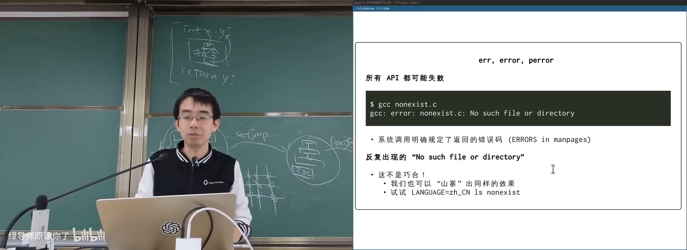
📷 errno、perror 与本地化错误信息
回到原视频 (01:08:20)
9. 进程运行环境：envp 与 environ
(参考时间: 01:12:05)
9.1 环境变量是一组继承的键值对
进程可以用环境变量影响程序行为。execve 接收一个 envp 参数：
int main(int argc, char *argv[], char *envp[]);
在更通用的写法中，main 只声明两个参数：
int main(int argc, char *argv[]);
环境变量则通过全局符号 environ 访问：
extern char **environ;
for (char **env = environ; *env != NULL; ++env) {
puts(*env);
}
环境变量格式是：
KEY=VALUE
例如：
LANGUAGE=zh_CN
PATH=/usr/local/bin:/usr/bin:/bin
HOME=/home/user
9.2 默认继承与用户级行为配置
底层 execve 必须显式给出环境变量。更方便的 exec 包装函数，例如 execl、execvp，默认让子进程继承父进程的环境。
这形成了一个强大的用户级机制：
flowchart TD
A["登录进程读取用户语言设置"] --> B["设置 LANGUAGE"]
B --> C["Shell 继承 LANGUAGE"]
C --> D["fork / exec"]
D --> E["工具与应用程序继承 LANGUAGE"]
E --> F["libc 输出对应语言的错误信息"]
F --> G["同一程序在不同用户环境呈现不同语言"]
因此，登录时设置一次语言环境，之后所有子孙进程都会继承，直到有人主动修改或清除它。
9.3 environ 是谁赋值的？
environ 是一个由 libc 提供的全局指针：
extern char **environ;
它和 stdout、stderr 一样，由 libc 负责初始化。
需要注意两个层次：
/* 打印 environ 变量保存的地址，也就是环境数组的首地址。 */
printf("%p\n", (void *)environ);
/* 打印 environ 这个变量自身在进程地址空间中的地址。 */
printf("%p\n", (void *)&environ);
进程刚启动时，初始参数和环境变量位于栈上，并由 System V ABI 的 Initial Process Stack 规定布局。地址空间随机化意味着这些数据的地址无法在链接时写死。因此，environ 在一开始可能仍为空；libc 必须从初始栈找到 envp，再给全局变量赋正确值。
flowchart TD
A["内核按 ABI 布局初始进程栈"] --> B["argc"]
B --> C["argv[0] ... argv[argc-1]"]
C --> D["NULL"]
D --> E["envp[0] ..."]
E --> F["NULL"]
F --> G["auxv 等辅助信息"]
A --> H["_start 读取栈指针"]
H --> I["计算 argc、argv、envp"]
I --> J["libc 初始化 environ"]
在 GDB 中对 environ 设置 watchpoint，可以观察 libc 写入它的精确位置。musl 的初始化代码最终会执行类似下面的赋值：
__environ = envp;
计算机系统里没有魔法：如果某个全局状态必须存在，就一定有某一小段代码从初始状态把它算出来。
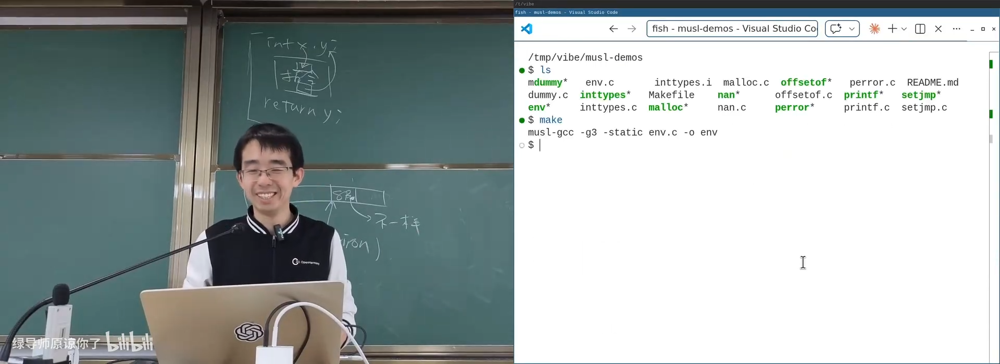
📷 通过 watchpoint 观察 environ 被 libc 赋值
回到原视频 (01:18:00)
10. C Runtime：从 _start 到 exit
(参考时间: 01:19)
10.1 程序不是从 main 开始的
链接器会在 ELF 文件中写入入口地址。该地址通常指向 _start，它来自 C Runtime 目标文件，例如 crt1.o。
不同平台还会链接 crtbegin.o、crtend.o、crtn.o 等运行时对象，用它们完成初始化、终结和构造析构支持。
可以查看 ELF 入口：
readelf -h ./demo | grep 'Entry point'
nm ./demo | grep '_start'
入口极小，但它承担了从内核交接状态到 C 世界的关键转换。
10.2 _start 与初始栈
在 x86-64 Linux 上，_start 的大致逻辑是：
- 从初始栈指针读取
argc； - 计算
argv = initial_sp + 1； - 根据 ABI 跳过
argv和终止 NULL，得到envp； - 把控制权交给
__libc_start_main或等价的 C Runtime 包装函数。
/* 概念性代码，实际版本由汇编实现。 */
long *sp = initial_stack_pointer;
long argc = sp[0];
char **argv = (char **)&sp[1];
char **envp = argv + argc + 1;
__libc_start_main(main, argc, argv, envp, ...);
flowchart TD
A["ELF entry point"] --> B["_start"]
B --> C["读取 initial stack pointer"]
C --> D["得到 argc / argv / envp"]
D --> E["__libc_start_main"]
E --> F["__init_libc 初始化 environ、TLS 等"]
F --> G["main(argc, argv, envp)"]
G --> H["exit"]
H --> I["运行 atexit handlers"]
I --> J["__libc_exit_fini"]
J --> K["flush stdio buffers"]
K --> L["exit system call"]
10.3 __libc_start_main 的后半段
主函数返回之后，C 程序并没有直接执行一条裸的退出系统调用。正常路径还要经过：
exit；- 按规则运行已注册的
atexit处理器； - 运行终止处理；
- 刷新 stdio 缓冲区；
- 调用真正的退出系统调用。
因此，一个最小 C 程序的完整生命周期可以写成：
flowchart LR
A["内核加载 ELF"] --> B["跳转到 _start"]
B --> C["解析初始栈"]
C --> D["初始化 libc"]
D --> E["调用 main"]
E --> F["执行 atexit 与清理"]
F --> G["flush buffers"]
G --> H["exit 系统调用"]
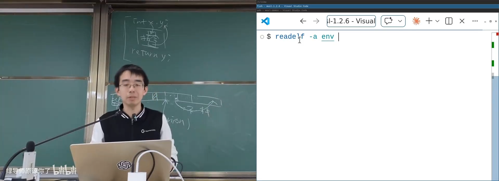
📷 ELF 入口地址与 _start
回到原视频 (01:23:30)
10.4 libc 最终包含什么
经过这一路的观察，libc 可以被理解为四类能力的集合：
- 机器相关的定义：类型宽度、浮点特性、整数范围、格式化宏、
offsetof； - 计算封装：字符串、内存、随机数、排序、数学和长跳转；
- 系统调用封装：文件、标准 I/O、进程管理、错误处理和进程协作；
- C Runtime 支撑：启动、初始栈解析、环境变量初始化、退出处理和标准流刷新。
flowchart BT
A["ABI / 机器 / 系统调用"] --> B["libc"]
B --> C["标准类型与宏"]
B --> D["计算与算法封装"]
B --> E["文件与进程 API"]
B --> B4["C Runtime"]
C --> F["可移植应用"]
D --> F
E --> F
B4 --> F
F --> G["C++ / Java / Python / 浏览器 / AI 系统"]
这就是应用生态的“第一级抽象”：它不隐藏所有复杂性，却把最常见的机器差异、系统调用模式、运行环境初始化和错误处理组织成了可复用、可标准化的接口。
11. 总结：从最小模型到万千世界
这一讲从 SimpleC 和系统调用出发，补齐了 C 语言连接汇编世界的 FFI，又沿着 libc 的源码依次走过：
- ISO C 与 POSIX 如何建立稳定可移植层；
- 为什么 musl 比 glibc 更适合学习；
- freestanding 与 hosted 环境的差别；
- 固定宽度整数、格式宏和
offsetof； - 寄存器 ABI 下的
stdarg； qsort、随机数和 NaN 体现出的语言边界；setjmp/longjmp如何实现跨函数长跳转；FILE *如何封装文件描述符与缓冲；printf家族如何共享vfprintf；exit、atexit、abort、system和popen的进程语义；errno、perror与本地化错误信息；envp、environ和进程环境继承；_start、__libc_start_main、__init_libc与最终退出。
今天 C 在应用开发方面有不少缺陷，但它仍然提供了观察“第一级抽象”如何构建的绝佳范本。正如讲师反复强调的，计算机系统里没有魔法：每一个看似自动发生的初始化、每一次跨语言调用、每一个错误提示，都可以沿着 ABI、libc、系统调用和内核的边界找到实现的落点。
附：官方参考与延伸阅读
以下链接来自官方讲义第 9 讲及课堂内容，按主题整理：
- 计算与 FFI
- GCC Extended Asm
- C 标准库与 freestanding
- Freestanding 实现
stddef.hfloat.hlimits.hinttypes.hstdint.hstdarg.hstring.hstdlib.hmath.hstdio.h- libc 实现
- musl libc
- musl 调试小程序
- 浮点格式与量化
- FP8: E4M3 / E5M2
- IEEE Spectrum: Number Representation
- C 语言的边界与后续讨论
- C is not a low-level language
- C isn't a programming language any more
官方课程资料：
版权与署名：本讲课程材料由蒋炎岩（jyy）编写。课程讲义与幻灯片采用 Creative Commons BY-NC 4.0 许可；本电子书保留课程出处、作者署名与许可说明。